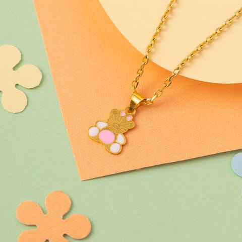
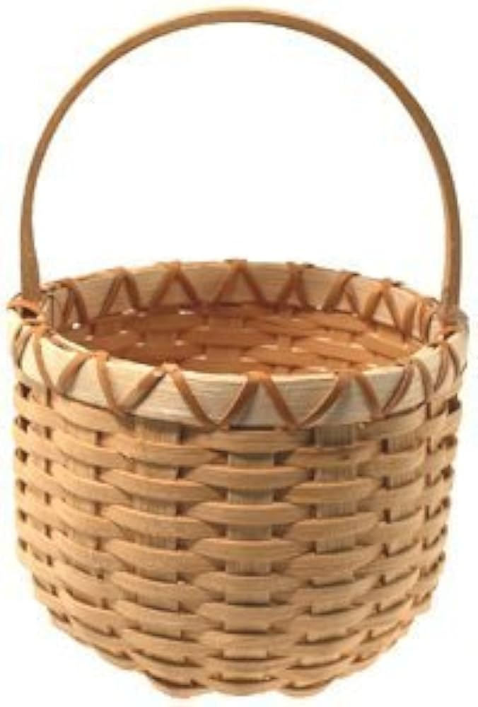

Handcraft refers to the skilled activity of making decorative or useful objects by hand, often using traditional techniques. It can also be used as a verb describing the act of manually creating or shaping something.
1.Wood & Plant CraftsWoodcarving: Chiseling raw wood into statues or functional items.
*Basket Weaving: Interlacing bamboo, rattan, or grass into containers.
*Pyrography: Burning decorative designs into wood using a heated tool.
*Flower Art: Arranging dried, flattened flora into frames.
2.🧵 Textile & Fiber CraftsPottery: Shaping clay into bowls or vases and firing them in a kiln.
*Stained Glass: Cutting colored glass pieces and joining them with lead.
*Polymer Clay Jewelry: Baking colorful synthetic clay into earrings or beads.
*Mosaic Art: Arranging small pieces of glass or tile into a pattern.
*📄 Paper CraftsOrigami: Folding paper into shapes without cutting or gluing.
*Papier-Mâché: Molding paper pulp or strips mixed with glue into structures.
*Quilling: Rolling and shaping narrow strips of paper into designs.
*Scrapbooking: Arranging photos and memorabilia creatively in albums.
*🪙 Metal & Leather CraftsLeather Crafting: Cutting, stamping, and sewing leather into wallets or belts.
*Wire Wrapping: Twisting metal wire around gemstones to make jewelry.
*Blacksmithing: Heating and hammering iron or steel into tools or decor.
🧵 Textile & Fiber Crafts
🪡 Stitch Needle threading through cloth.
🧶 Yarn Ball of wool with two sticking-out needles.
👕 Handmade T-shirt with a small "hand" stamp on the pocket.
🕸️ Weave Grid pattern representing a loom layout.
🏺 Clay & Pottery[ ⚱️ Pottery ] A traditional clay vase or urn.
🌀 Wheel Spiral lines showing a spinning pottery wheel.
🔥 Kiln A small brick oven with a flame symbol inside.
🪵 Wood & Leather[ 🪵 Raw Wood ] A rough log next to a sharp chisel.
🔨 Tool Crossed hammer and hand-saw.
🥾 Hide Silhouette of cut leather material.
📄 Paper & Drawing[ 📐 Crafting ] Ruler and a utility cutting blade crossed.
🎨 Palette Artist paint palette with a paintbrush.
🕊️ Origami Clean geometric lines forming a paper crane.
🤝 The "Handmade" Badge[ 🖐️ + ❤️ ] An open hand with a heart in the center.
(🛠️) The word "HANDCRAFTED" inside a thick circular border.
🏷️ 100% A classic hang-tag saying "100% Manual Work".

